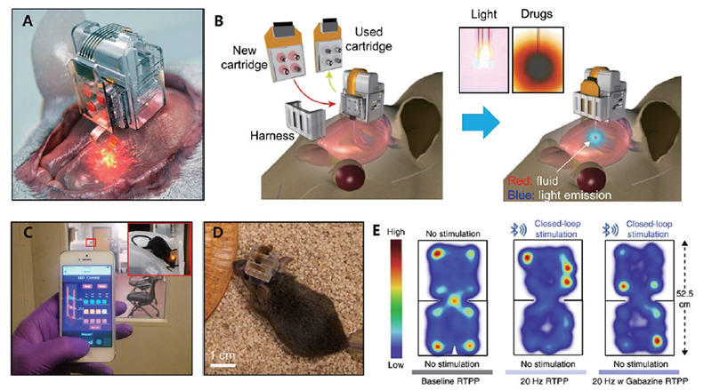

Report by Subjects
Report by Subjects
KAIST RESEARCH ACHIEVEMENTS
Smartphone-controlled Brain Implants for Chronic Wireless Neuropharmacology and Photostimulation
School of Electrical Engineering Jae-Woong Jeong
Summary
Both in vivo neuropharmacology and optogenetic stimulation can be used to decode neural circuitry, and can provide therapeutic strategies for brain disorders. However, current neuronal interfaces hinder long-term studies in awake and freely behaving animals, as they are limited in their ability to provide simultaneous and prolonged delivery of drugs and light, and employ complex control systems with tethered setup. Here we developed smartphone-controlled, minimally invasive, soft optofluidic neural implants for chronic in vivo pharmacology and optogenetics with selective manipulation of brain circuits. We demonstrated the use of the devices for the control of the locomotor activity of mice for over four weeks via programmable wireless drug delivery and photostimulation. Owing to their ability to deliver both drugs and photopharmacology into the brain repeatedly over long time periods, the technology may contribute to uncovering the basis of neuropsychiatric diseases.
Background (objectives)
In vivo neuropharmacology and optogenetics are powerful techniques that can dissect complex neural circuitry using drugs and light, respectively. These approaches can render pivotal insights not only to identify roles of distinct cell types for a specific physiological, cognitive or behavioral activity; but also, to decipher and treat various neurodegenerative diseases. However, current neural interface methods, which are based on the decades-old cannulas and fiber optics, are rather crude and difficult to implement because they severely limit the animal's range of motion, greatly damage the brain region of interest, and restrict interaction with the biologically relevant modalities in the brain. Moreover, current technology lacks sub-cellular, spatiotemporal control of drug delivery, high resolution, wireless control, and multifunctionality.
Contents
To tackle these significant neuroscience challenges, we developed a small, smartphone-controlled brain implant that can wirelessly deliver drugs and light indefinitely for "chronic" in vivo pharmacology and optogenetics. This device, incorporating Lego-like replaceable drug cartridges and an ultrathin soft probe (with the thickness of a human hair) with microscale LEDs and microfluidic channels, allows neuroscientists to study the same brain circuits for several months through optical and chemical manipulations. The design integrated with a wireless interface enables compact, lightweight, and standalone system, thus facilitating seamless implantation and operation in the brain without causing disturbance of naturalistic behavior. We successfully demonstrated wireless capabilities of these devices in freely moving animals that can deliver pharmacological agents, and provide concurrent photostimulation with drug delivery to manipulate reward-related behavior.

Using a simple user interface on a smartphone, we could easily trigger any specific combination or precise sequencing of light and drug deliveries in any implanted target animal without the need to be physically inside the laboratory. In addition, our team succeeded in controlling place preference of freely behaving mice through wireless manipulation of the brain using light and drug. Mice that have light-sensitive neurons associated with place preference behavior could be controlled to make them stay on one side of a cage through light stimulation on these neurons. The mice lost their place preference behavior when a smartphone control triggered wireless delivery of a drug that blocked the action of the neurons.
Expected effect
These wireless devices possess potential for uncovering the basis for neuropsychiatric diseases as well as for translational studies due to their capability to deliver both drugs and photo-pharmacology into the brain repeatedly over long periods of time.
Research Outcomes
[Paper] R. Qazi, A. M. Gomez, D. C. Castro, Z. Zou, J. Y. Sim, Y. Xiong, J. Abdo, C. Y. Kim, A. Anderson, F. Lohner, S.-H. Byun, B. C. Lee, K.-I. Jang, J. Xiao, M. R. Bruchas* and J.-W. Jeong*, “Wireless optofluidic brain probes for chronic neuropharmacology and photostimulation,” Nature Biomedical Engineering 3, 655-669 (2019). [2018 Impact factor: 17.135]
[Press release 1] This work was highlighted by over 60 news agencies across the world, including New York Post, The Week, Technology Times, EE News Europe, Innovation Toronto, Xinhua News, Chosun Ilbo, Dong-A Ilbo, and YTN News. Also, highlighted as a feature story in Asia Research News 2020 Magazine.
[Press release 2] The American science magazine, The Scientist, selected a picture of this neural device as 'Image of the Day'.
Research Funding
KAIST, startup fund
NRF, Young Researcher Program
NRF, Basic Research Laboratory Program